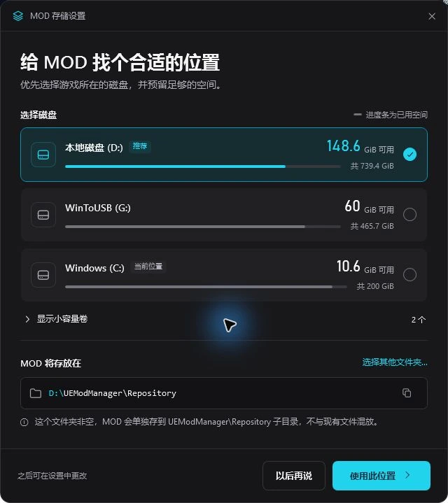

快速开始
第一次使用
- 选好存储位置。首次运行时，选择用于存放 MOD 的磁盘或文件夹，优先考虑游戏所在磁盘。
- 添加游戏，确认路径。选择游戏预设，核对游戏安装位置和对应的 MOD 目录。
- 导入 MOD，再启用。建议先用少量 MOD 测试，确认游戏能正常启动后再逐步增加。
具体操作可查看完整使用说明书。核心管理无需登录；MOD 文件不会随账号同步到云端。
游戏列表
以下游戏提供内置预设。也可以自行添加游戏并设置路径；具体 MOD 的适用版本与安装要求，请以作者说明为准。
- 黑神话·悟空
- 剑星 / 剑星 (CNS)
- 光与影：33号远征队
- 明末·渊虚之羽
- 暗黑破坏神4
- 生化危机9
- 识质存在
- 无主之地4
- 死亡搁浅2
- 杀戮尖塔2
MOD 放在哪里？
MOD 包保存在你选择的仓库文件夹中。MOD 清单、分类、方案和设置独立存放于系统用户数据目录，与程序安装目录分开。
想更换磁盘时，可在设置中迁移仓库。选择硬链接部署时，仓库与游戏需要在同一个磁盘；跨盘时会使用复制方式。

从旧版本升级时，先完成下方的迁移步骤。重要 MOD 和游戏存档建议另留备份。
老用户升级
把旧数据带过来
- 关闭旧版本，保留原数据。先备份重要 MOD、配置与游戏存档，再安装新版本。
- 运行迁移脚本。双击新版本安装目录内的
一键迁移老版本数据.bat，按提示完成备份，脚本会启动管理器进行迁移。 - 打开新版本检查。确认游戏路径、MOD 列表、分类和启用状态。检查完成前，保留旧目录及迁移备份。
v2.1 系列
这一版，整理了这些事
- 数据与程序分开存放。用户数据独立于安装目录，便于更新程序和管理本地数据。
- 存储位置更清楚。首次使用可选择磁盘，之后也可以在设置中迁移 MOD 仓库。
- 日常管理更稳定。持续修复分类、菜单交互、部署与保存反馈问题。
具体功能与界面以你安装的版本为准。
隐私与联网说明
MOD 管理在本地完成
核心管理无需登录。MOD 文件保存在本地，账号功能目前不提供 MOD 文件云同步。
更新检查与使用统计
参与“检查更新与匿名统计”后，程序会发送随机生成的设备编号、软件版本、Windows 版本；登录时可能附带邮箱的哈希值，用于区分统计中的账号。
这项统计不上传邮箱明文、电脑名、文件路径、游戏目录或 MOD 清单。邮箱哈希是经过处理的标识，不等同于无法关联到账号。
在哪里关闭？
在“设置 → 常规参数 → 检查更新与匿名统计”中关闭。该选项同时控制对应的更新检查和统计请求；尚未同意参与时，不进行这项上报。
登录、注册、找回密码等账号操作需要联网，并会按相应操作发送必要的账号信息。它们与上述统计选项分别处理。
感谢相伴
鸣谢
感谢参与测试、提出建议和支持开发的朋友。
胖虎、YUki、Tarnished、春告鳥、蘭、虎子、神秘不保底男、文铭、阪、林墨、Daisuke、虎子哥、枪王、爱酱游戏群全体群友
游戏名称、图标与商标归各自权利人所有，仅用于标识对应游戏。查看图标来源。
支持作者
如果工具帮到了你，可以请我喝杯咖啡。也欢迎通过使用反馈、测试和建议参与改进。